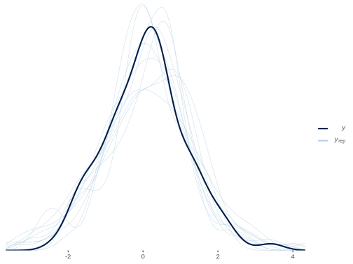
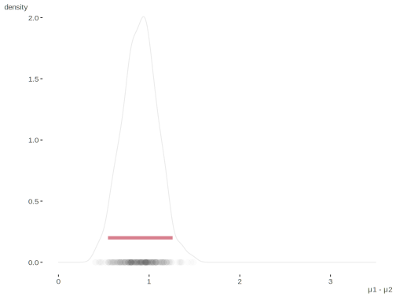
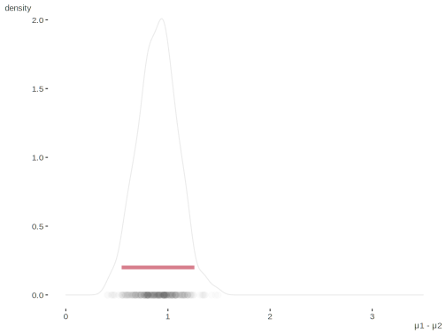
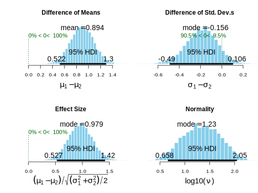

Bayesian t-test
The following is based on Kruschke’s 2012 JEP article ‘Bayesian estimation supersedes the t-test (BEST)’ with only minor changes to Stan model. It uses the JAGS/BUGS code in the paper’s Appendix B as the reference.
Data Setup
Create two groups of data for comparison. Play around with the specs if you like.
library(tidyverse)
set.seed(1234)
N_g = 2 # N groups
N_1 = 50 # N for group 1
N_2 = 50 # N for group 2
mu_1 = 1 # mean for group 1
mu_2 = -.5 # mean for group 1
sigma_1 = 1 # sd for group 1
sigma_2 = 1 # sd for group 1
y_1 = rnorm(N_1, mu_1, sigma_1)
y_2 = rnorm(N_2, mu_2, sigma_2)
y = c(y_1, y_2)
group_id = as.numeric(gl(2, N_1))
# if unbalanced
# group = 1:2
# group_id = rep(group, c(N_1,N_2))
d = data.frame(y, group_id)
tidyext::num_by(d, y, group_id) # personal package, not necessary# A tibble: 2 x 11
# Groups: group_id [2]
group_id Variable N Mean SD Min Q1 Median Q3 Max `% Missing`
<dbl> <chr> <dbl> <dbl> <dbl> <dbl> <dbl> <dbl> <dbl> <dbl> <dbl>
1 1 y 50 0.5 0.9 -1.3 0 0.5 1 3.4 0
2 2 y 50 -0.4 1 -2.3 -1.1 -0.5 0.3 2 0Model Code
The Stan code.
data {
int<lower = 1> N; // sample size
int<lower = 2> N_g; // number of groups
vector[N] y; // response
int<lower = 1, upper = N_g> group_id[N]; // group ID
}
transformed data{
real y_mean; // mean of y; see mu prior
y_mean = mean(y);
}
parameters {
vector[2] mu; // estimated group means and sd
vector<lower = 0>[2] sigma; // Kruschke puts upper bound as well; ignored here
real<lower = 0, upper = 100> nu; // df for t distribution
}
model {
// priors
// note that there is a faster implementation of this for stan,
// and that the sd here is more informative than in Kruschke paper
mu ~ normal(y_mean, 10);
sigma ~ cauchy(0, 5);
// Based on Kruschke; makes average nu 29
// might consider upper bound, as if too large then might as well switch to normal
nu ~ exponential(1.0/29);
// likelihood
for (n in 1:N) {
y[n] ~ student_t(nu, mu[group_id[n]], sigma[group_id[n]]);
// compare to normal; remove all nu specifications if you do this;
//y[n] ~ normal(mu[group_id[n]], sigma[group_id[n]]);
}
}
generated quantities {
vector[N] y_rep; // posterior predictive distribution
real mu_diff; // mean difference
real cohens_d; // effect size; see footnote 1 in Kruschke paper
real CLES; // common language effect size
real CLES2; // a more explicit approach; the mean should roughly equal CLES
for (n in 1:N) {
y_rep[n] = student_t_rng(nu, mu[group_id[n]], sigma[group_id[n]]);
}
mu_diff = mu[1] - mu[2];
cohens_d = mu_diff / sqrt(sum(sigma)/2);
CLES = normal_cdf(mu_diff / sqrt(sum(sigma)), 0, 1);
CLES2 = student_t_rng(nu, mu[1], sigma[1]) - student_t_rng(nu, mu[2], sigma[2]) > 0;
}Estimation
Run the model.
stan_data = list(
N = length(y),
N_g = N_g,
group_id = group_id,
y = y
)
library(rstan)
fit = sampling(
bayes_t_test,
data = stan_data,
thin = 4
)Comparison
Let’s take a look.
print(
fit,
pars = c('mu', 'sigma', 'mu_diff', 'cohens_d', 'CLES', 'CLES2', 'nu'),
probs = c(.025, .5, .975),
digits = 3
)Inference for Stan model: e9624a2b7528e50b8f8b9d0fb2b3c58c.
4 chains, each with iter=2000; warmup=1000; thin=4;
post-warmup draws per chain=250, total post-warmup draws=1000.
mean se_mean sd 2.5% 50% 97.5% n_eff Rhat
mu[1] 0.512 0.004 0.125 0.279 0.508 0.755 1139 0.997
mu[2] -0.386 0.005 0.156 -0.680 -0.392 -0.083 899 0.999
sigma[1] 0.825 0.004 0.116 0.586 0.825 1.063 900 0.998
sigma[2] 1.017 0.004 0.123 0.795 1.010 1.275 820 1.002
mu_diff 0.898 0.006 0.199 0.500 0.910 1.270 960 0.997
cohens_d 0.939 0.007 0.209 0.513 0.949 1.318 890 0.998
CLES 0.744 0.002 0.048 0.642 0.749 0.824 905 0.998
CLES2 0.768 0.014 0.422 0.000 1.000 1.000 966 1.002
nu 27.231 0.671 21.394 3.815 21.489 83.493 1018 0.997
Samples were drawn using NUTS(diag_e) at Wed Nov 25 17:12:28 2020.
For each parameter, n_eff is a crude measure of effective sample size,
and Rhat is the potential scale reduction factor on split chains (at
convergence, Rhat=1).Now we extract quantities of interest for more processing/visualization. Compare population and observed data values to estimates in summary to the observed mean difference.
y_rep = extract(fit, par = 'y_rep')$y_rep
mu_diff = extract(fit, par = 'mu_diff')$mu_diff
init = d %>%
group_by(group_id) %>%
summarise(
mean = mean(y),
sd = sd(y),
)
means = init$mean
sds = init$sd
mu_1 - mu_2 # based on population values[1] 1.5abs(diff(means)) # observed in data[1] 0.9074175Compare estimated Cohen’s d.
cohens_d = extract(fit, par = 'cohens_d')$cohens_d
(mu_1 - mu_2) / sqrt((sigma_1 ^ 2 + sigma_2 ^ 2)/2) # population[1] 1.5(means[1] - means[2]) / sqrt(sum(sds^2)/2) # observed[1] 0.9411788mean(cohens_d) # bayesian estimate[1] 0.9388044Common language effect size is the probability that a randomly selected score from one population will be greater than a randomly sampled score from the other.
CLES = extract(fit, par='CLES')$CLES
pnorm((mu_1 - mu_2) / sqrt(sigma_1^2 + sigma_2^2)) # population[1] 0.8555778pnorm((means[1] - means[2]) / sqrt(sum(sds^2))) # observed[1] 0.7471391mean(CLES) # bayesian estimate[1] 0.7443192Compare to Welch’s t-test that does not assume equal variances.
t.test(y_1, y_2)
Welch Two Sample t-test
data: y_1 and y_2
t = 4.7059, df = 95.633, p-value = 8.522e-06
alternative hypothesis: true difference in means is not equal to 0
95 percent confidence interval:
0.5246427 1.2901923
sample estimates:
mean of x mean of y
0.5469470 -0.3604705 Compare to BEST. Note that it requires coda, whose traceplot function will mask rstan’s.
library(BEST)
BESTout = BESTmcmc(
y_1,
y_2,
numSavedSteps = 10000,
thinSteps = 10,
burnInSteps = 2000
)
summary(BESTout) mean median mode HDI% HDIlo HDIup compVal %>compVal
mu1 0.513 0.512 0.530 95 0.259 0.7530
mu2 -0.381 -0.380 -0.375 95 -0.686 -0.0823
muDiff 0.894 0.894 0.886 95 0.522 1.2955 0 100.00
sigma1 0.834 0.830 0.824 95 0.615 1.0544
sigma2 1.022 1.015 1.015 95 0.804 1.2609
sigmaDiff -0.188 -0.184 -0.156 95 -0.490 0.1061 0 9.47
nu 30.891 21.864 10.501 95 2.577 87.3050
log10nu 1.339 1.340 1.235 95 0.658 2.0477
effSz 0.964 0.963 0.979 95 0.527 1.4203 0 100.00Visualization
We can plot the posterior predictive distribution vs. observed data density.
library(bayesplot)
pp_check(
stan_data$y,
rstan::extract(fit, par = 'y_rep')$y_rep[1:10, ],
fun = 'dens_overlay'
)
We can expand this to incorporate the separate groups and observed values. Solid lines and dots represent the observed data.
 

Plots from the BEST model.
walk(c("mean", "sd", "effect", "nu"), function(p) plot(BESTout, which = p))
Source
Original code available at: https://github.com/m-clark/Miscellaneous-R-Code/blob/master/ModelFitting/Bayesian/rstant_testBEST.R